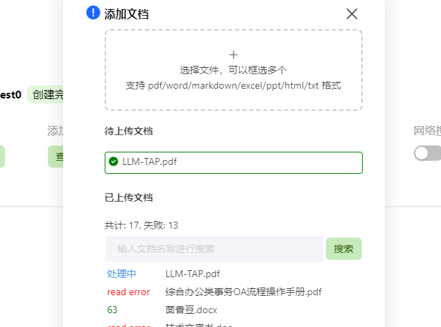
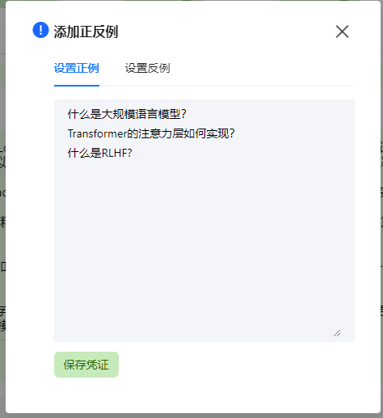
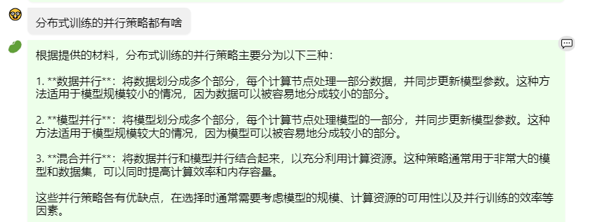
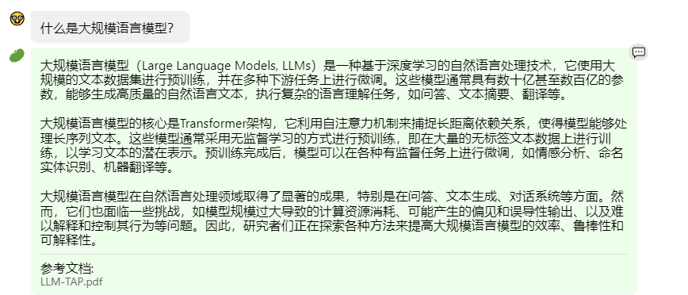
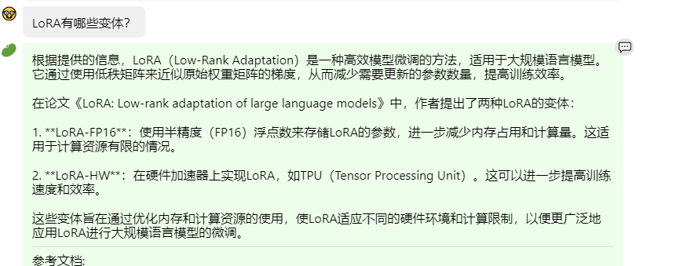
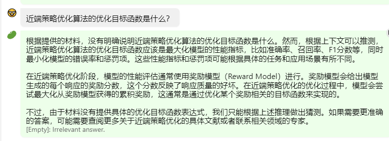
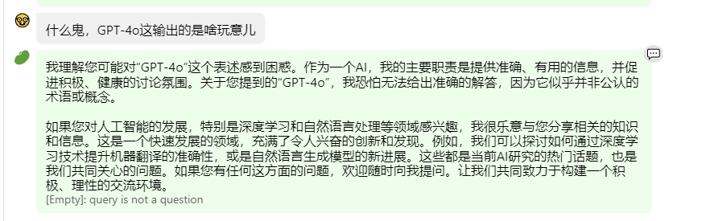

大模型实战营-初夏营-第三次课作业
这是大模型实战营-初夏营第三次课的作业
基础作业
在茴香豆 Web 版中创建自己领域的知识问答助手
我选择了开源书籍《大规模语言模型：从理论到实践》 作为知识库给豆哥查询，这本书树立了大语言模型相关的理论和最佳实践，建立知识库的具体步骤如下：
- 进入知识库
输入视频中给的测试账号和密码：
点击前往 进入测试知识库
- 上传文件
将书籍下载到本地后，上传到知识库

- 设置正例
在添加正反例中添加希望豆哥回答问题的示例：

- 进行对话测试
进行了多轮对话测试后，发现：
- 豆哥在大多数情况下能够非常准确地识别书中的文字内容并且做出准确的答复：
- Dialog #1

- Dialog #2

- 有些情况下豆哥不能准确利用书中的知识，会产生幻觉或者坦承不知道：
- Dialog #3: Hallucination

在上面的对话中，豆哥产生了幻觉。原论文中并没有提到这两种变体，而参考书籍中相关资料提到了AdaLoRA和QLoRA等变体。
- Dialog #4: I don't know

在上面的对话中，豆哥承认自己不知道，但是书中确实提到了公式，可能是底层的文件解析没有对公式进行正确解析导致豆哥没办法利用这些公式回答问题。而且从底部的[Empty]: Irrelevant answer可以知道，在正式群聊部署中，豆哥将不会对此问题做出任何响应。
- 豆哥能够准确识别与材料无关的输入
- Dialog #5

从底部的[Empty]: query is not a question
可以知道，豆哥已经识别出来这不是与材料相关的问题，因此在群聊中不会响应。
在 InternLM Studio 上部署茴香豆技术助手
见本节课的笔记
进阶作业
将基础作业1中的茴香豆助手部署到飞书群
TBD，难度较高，所有课程完成后，若有余力可以试试